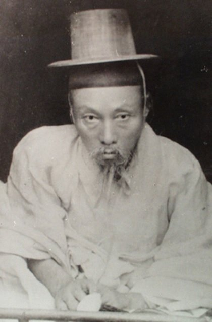

Kim Bok han :
[1860.7.24~1924.5.4]
Achievements
- Civil Service Career
- Passed the special literary examination (byeolsi mungwa) in 1892, achieving 9th rank.
- Held various government posts including:
- Vice Chief of Hongmungwan (Office of Special Advisors)
- Teacher for Crown Prince Sunjong at the Royal Academy (Seja Sigangwon)
- Chief of Sungkyunkwan (National Confucian Academy).
- Led the First Hongju Uibyeong (Righteous Army) against the Japanese in 1895, though it failed due to betrayal.
- Participated indirectly in the Second Hongju Uibyeong (1905), providing support and guidance.
- Played a key role in drafting the independence petition for the Paris Peace Conference (1919), alongside other Confucian scholars.
- Posthumously awarded the Order of Merit for National Foundation (Independence Medal) by the Republic of Korea in 1963.
- His grave and legacy were designated as a Cultural Heritage Site (No. 169) by Chungcheongnam-do in 1984.
- Honored with the establishment of Chuyang Shrine to preserve his memory and hold annual rites.
- His works were compiled posthumously into a collection titled "Jisanjip" (志山集) by his descendants and disciples.
Reached the rank of Tongjeong Daebu (3rd rank civil official).
Independence Movement
Posthumous Recognition
Literary Contributions
Verdicts
Imprisonment Following the Hongju Uprising (1895-1896):
- Arrested and imprisoned multiple times by Japanese-aligned Korean authorities.
- Suffered permanent physical disability (beriberi) due to poor prison conditions.
- Initially sentenced to 10 years of exile but released under royal pardon by Emperor Gojong.
- Arrest Following Eulsa Treaty Resistance (1905):
- Detained and interrogated by Japanese authorities for leading anti-treaty movements and submitting a memorial advocating resistance.
- Released shortly after but remained under surveillance.
- Recognized for his unwavering dedication to preserving Korea's sovereignty and Confucian values.
- His actions inspired subsequent independence movements and earned him posthumous recognition as a national hero.
Enduring Legacy: